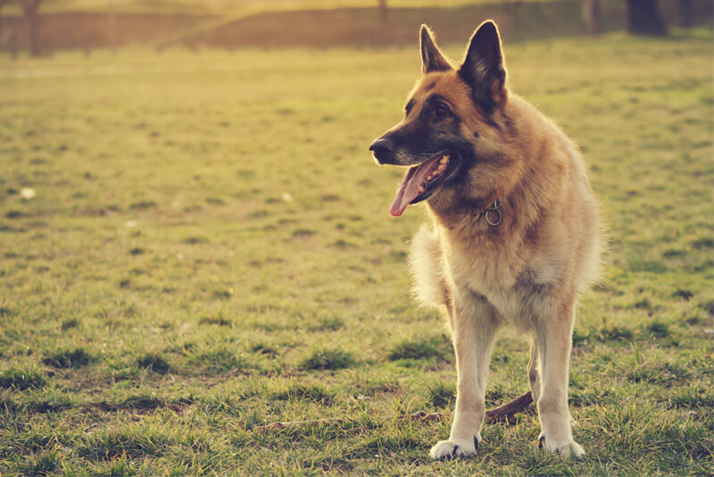
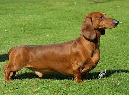

- 
- 
Buldog
Peso Médio
24kgAltura Média
24cmO buldogue-inglês é uma raça de cães do tipo buldogue oriunda da Inglaterra. Descende de cães (os antigos-buldogues-ingleses) utilizados para combater touros em um desporto sangrento chamado bull-baiting.
Nos Países Baixos uma lei foi aprovada em 2014 a respeito de criação de cães braquicefálicos. Esta lei neerlandesa proíbe a criação de cães com focinhos muito curtos ou achatados, estabelecendo que os cães devem ter no mínimo o focinho acima de um terço (33%) do comprimento do crânio, e, outras exigências sobre abertura de nariz, profundidade de focinho, sons da respiração, pálpebras, produção de lágrimas, pigmentação da córnea, etc
Sua personalidade é descrita como brincalhona e afetuosa, apesar da face brava. Por ter a tendência a ser preguiçoso, para seus donos mantê-los saudáveis, fortes e evitar problemas respiratórios, é necessário passear com eles ao menos duas vezes ao di
Seu físico robusto, diminuto e com rugas, favorece vários problemas nas articulações, olhos e pele, por isso exige cuidados específicos. O Buldogue, por seu focinho achatado, pode apresentar hipertermia, problemas respiratórios e no palato